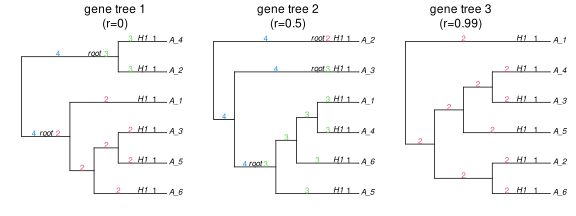

correlated inheritance
The typical assumption made by most network inference methods is that of independent inheritance at a hybrid node. It means that if multiple lineages (of a given locus) at present at a hybrid node, then each one is inherited from each parent according to the γ inheritance probabilities independently of the other lineages.
Another model is that the lineages at a hybrid node are all inherited from the same parent, still choosing a (common) parent according to the γ inheritance probabilities. This model has full (and positive) correlation between lineages, and was used by Gerard, Gibbs & Kubatko (2011) for example.
The other extreme might be interesting for modelling allopolyploid events: of 2 lineages of the same locus at a hybrid node, exactly 1 of them comes from one parent, and the other comes from the other parent. This model would have negative correlation between lineages.
By default, simulatecoalescent uses the traditional model, with independent lineages.
It also has an option to simulate lineage inheritance with positive correlation, under a coalescent model described in Fogg, Allman & Ané (2023). For this, lineages' parents are drawn according to a Dirichlet process with base distribution determined by the γ values, and with concentration parameter α = (1-r)/r, that is, r = 1/(1+α), where r is the input inheritance correlation. More specifically, consider 2 individuals (alleles) at a given locus, that have not coalesced yet and are present at a give hybrid node. According to the coalescent model with correlated inheritance, the second individual is inherited from the same parent as the first individual with probability r. And with probability 1-r, the second individual is inherited from any parent (including the parent chosen by the first individual) based on their γ values.
This model can be the result of different loci evolving according to different γ inheritance values. For example, loci that are under selection in the environment where gene flow occurred may be more likely to be passed through gene flow, whereas loci that are involved in reproduction barriers might be less likely to be passed through gene flow. This would result in different sets of γ values across different loci, and correlated inheritance overall.
At one extreme, with correlation r=1 we have α = 0 and all lineages inherit from the same (randomly sampled) parent. This is the common inheritance model. The independence model corresponds to the other extreme r=0 and α infinite.
The same correlation r (or concentration α) parameter is used at all hybrid nodes, but the Dirichlet process is applied independently across hybrid nodes.
The effect of inheritance correlation can be seen on this species network with a single species "A" from which we will sample 6 individuals:
net = readnewick("((A:0.0)#H1:3::0.6,#H1:3)root;")
plot(net, shownodelabel=true, showgamma=true, showedgenumber=true, tipoffset=0.1);We will now simulate 3 gene trees, each with 6 individuals sampled from A: with the independence model (equivalent to r=0 correlation), and then with r=0.5 and r=0.99 inheritance correlations.
using Random; Random.seed!(12);
gt1 = simulatecoalescent(net, 1, 6; inheritancecorrelation=0, nodemapping=true)[1];
gt2 = simulatecoalescent(net, 1, 6; inheritancecorrelation=0.5, nodemapping=true)[1];
gt3 = simulatecoalescent(net, 1, 6; inheritancecorrelation=0.99, nodemapping=true)[1];
# build data frames to label each edge with the species lineage it evolved in
using DataFrames
speciespath(phy) = DataFrame(
number = [e.number for e in phy.edge],
label = [population_mappedto(e) for e in phy.edge]
)
el1 = speciespath(gt1); el2 = speciespath(gt2); el3 = speciespath(gt3);
plot(gt1, shownodelabel=true, edgelabel=el1, edgelabelcolor=el1.label, tipoffset=0.1);
plot(gt2, shownodelabel=true, edgelabel=el2, edgelabelcolor=el2.label, tipoffset=0.1);
plot(gt3, shownodelabel=true, edgelabel=el3, edgelabelcolor=el3.label, tipoffset=0.1);
In all cases, any lineage has a probability γ=0.6 to come from species edge 2 (labeled in red), and probability γ=0.4 to come from species edge 3 (in green). When the inheritance correlation r increases, lineages have an increased preference to come from the same parent as other lineages (at the same locus).